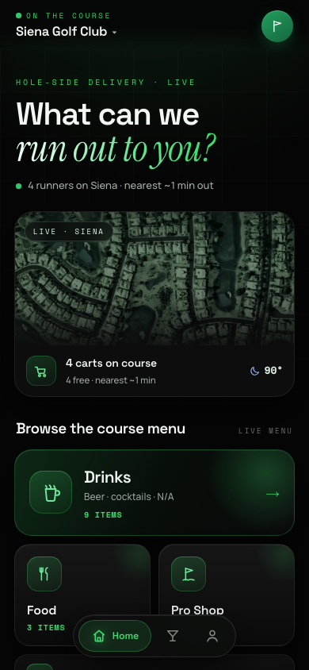
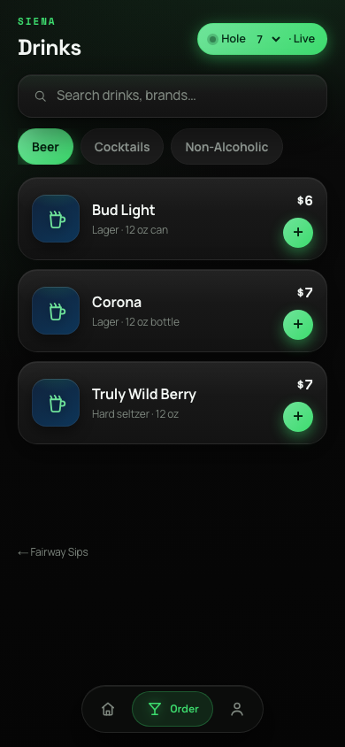
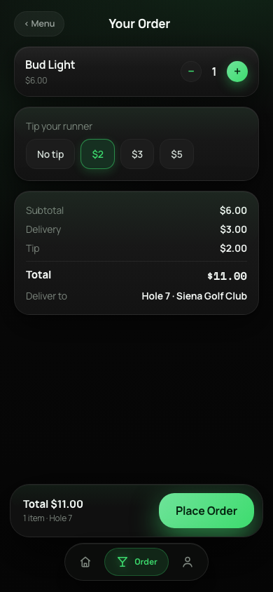
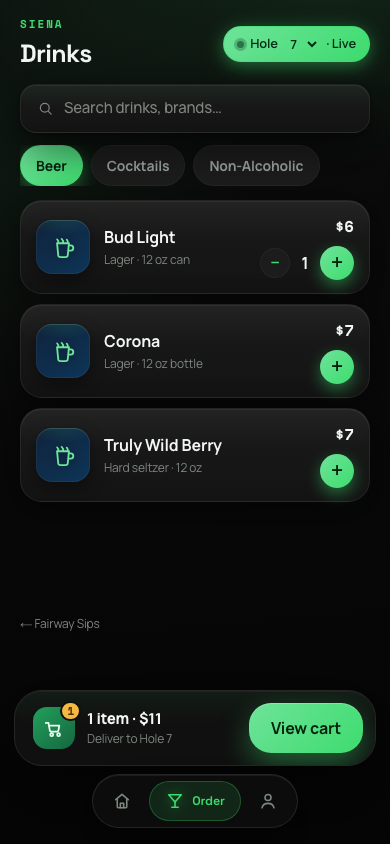

Make the course feel like a private club.
Drinks lead the wedge. The bigger product is a premium on-course hospitality layer that keeps players comfortable, spending, and coming back after the round.

Golfers are captive for four hours. The cart still has to find them.
Every slow cart pass, missed turn stop, and post-round skip is lost hospitality. Fairway Sips turns the course into an always-on service floor.
What can we run out to you? becomes the course's most profitable question.
US rounds played each year, with most of them on public-access courses.
Of younger golfers skip the 19th hole, leaving the course without the after-round tab.
Higher average order value when the order starts on a phone.
From craving to order, without waiting for a cart sighting.
A premium service layer in the golfer's pocket.
Players see the live course, browse the menu, add to cart, and send the order to their hole. The experience feels more like hospitality than utility.


From craving to handoff without breaking the round.
Scan once. The course loads its live map, menu, and service status in the browser.
Order anywhere. Hole selection, favorites, tips, and alcohol compliance stay inside the flow.
Stay playing. The golfer never leaves the tee box, never waits at the turn, and never wonders if help is coming.

Recovered revenue with no new counter line.
Fairway Sips gives courses a way to serve the player who would have bought if service had been easier. Drinks are the clean first product: high margin, fast prep, simple routing.
The course pays nothing. In the strongest version, the course gets paid.
We remove procurement friction by monetizing the order itself. Courses keep the beverage sale, players pay the convenience layer, and pilot partners can receive a kickback on recovered volume.
Player convenience fee
A familiar delivery-style service fee funds the platform without creating a course budget item.
Course keeps the core sale
The drink revenue remains course revenue. We are the hospitality rail, not a replacement vendor.
Kickback closes pilots
A small share of platform GMV can go back to the course, turning adoption into found money.
Install the hospitality layer without touching course operations.
The first pilot should feel like a marketing and F&B upgrade, not a systems project. We do the setup, the course approves the menu, staff run the same carts.
Hardware needed. The golfer app runs in the browser from a QR code.
Staff training target for a runner who already knows the course.
Alcohol orders stay gated by checkout language and in-person ID checks.
Menu updates, order status, and course demand are visible as they happen.
Turn every hole into a premium service point.
Fairway Sips helps public courses feel private, helps private courses feel even more attentive, and gives operators a clear path to recover F&B revenue they are already losing.